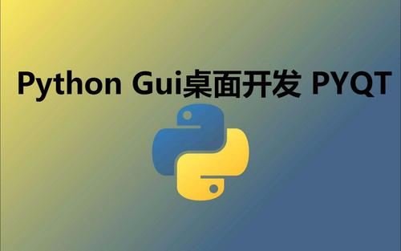

PyQt5基础
1. GUI编程学什么
( 1 ) 大致了解你所选择的 GUI 库
( 2 ) 基本的程序的结构：使用这个 GUI 库来运行你的 GUI 程序
( 3 ) 各种控件的特性和如何使用
( 4 ) 控件的样式
( 5 ) 资源的加载
( 6 ) 控件的布局
( 7 ) 事件和信号
( 8 ) 动画特效
( 9 ) 界面跳转
( 10 ) 设计工具的使用
2. PyQt5是什么
QT 是跨平台 C++ 库的集合，它实现高级 API 来访问现代桌面和移动系统的许多方面。这些服务包括 定位服务，多媒体，NFC和蓝牙连接，基于 Chromium 的 web 浏览器以及传统的UI开发等。PyQt 就是对 QT 库 Python 的绑定。PyQt 可以嵌入在基于 C++ 的应用程序中，以允许这些应用程序的用户配置或增强这些应用程序的功能。
3. PyQt5的优势
( 1 ) 简单好用
( 2 ) 功能强大
( 3 ) 跨平台支持
( 4 ) 性能高
( 5 ) 文档齐全：PyQt 本身就是对 QT 库 Python 的绑定，绑定的时候保持了原有的QT库的API。也就是说，PyQt 除了自己的文档外，也几乎可以通用 QT 文档。
( 6 ) 稳定性高：面向对象、信号与槽的机制、界面设计与业务代码完全隔离
( 7 ) 生态支持：Qt Designer 进行图形界面设计、ui 转换成 py 文件、资源处理
( 8 ) 开源免费：PyQt 是双重许可的，开发人员可以在 GPL 和商业许可之间进行选择。采用 GPL 协议，软件著作权属于开发者所有，受国际相关版权法保护，允许其他用户对原作者软件进行复制和发行，可以更改后发行自己的软件。
4. 开发环境的安装
首先是 Python3 环境和 PyCharm 开发工具的安装，由于比较简单，这里不再赘述！然后就是 GUI 开发环境的安装，即安装我们的 PyQt5 库。下面是在 Python 的虚拟环境中安装 PyQt5，
( 1 ) 在 Python 全局环境中安装 pipenv：
$ pip3 install pipenv -i https://pypi.tuna.tsinghua.edu.cn/simple
( 2 ) 创建并进入项目目录
$ mkdir pyqt5-pro && cd pyqt5-pro
( 3 ) 创建虚拟环境：
$ pipenv --three
( 4 ) 激活虚拟环境(激活环境后会自动创建Pipfile文件)：
$ pipenv shell
( 5 ) 将源改为国内源加速下载，url 换成 “https://pypi.tuna.tsinghua.edu.cn/simple”：
(pyqt5-pro) $ vim Pipfile
( 6 ) 安装 pyqt5 库
(pyqt5-pro) $ pipenv install pyqt5
这个时候我们使用 Pycharm 打开这个项目文件夹：
 可以从设置中看到该项目依赖的Python环境：
可以从设置中看到该项目依赖的Python环境：

5. 第一个PyQt5桌面应用
创建一个窗口，在窗口中显示文本信息：
from PyQt5.Qt import *
import sys
if __name__ == '__main__':
# 创建QApplication类的实例
app = QApplication(sys.argv)
# 创建一个窗口
window = QWidget()
# 设置窗口标题
window.setWindowTitle('Hello World!')
# 设置窗口尺寸
window.resize(400, 400)
# 移动窗口位置
window.move(1000, 300)
# 创建label控件
label = QLabel(window)
# 为控件设置文本
label.setText('Hello World!')
# 移动空间的位置
label.move(160, 160)
# 显示窗口
window.show()
# 进入程序的主循环，并通过exit函数确保主循环安全结束
sys.exit(app.exec_())
效果图：

QtDesigner的使用
1. 安装和配置
安装 Qt 的工具包：
$ pip install PyQt5-tools -i https://pypi.douban.com/simple
安装完成后，QTdesigner 就在你的 python 环境下的扩展包里面了!
将 QtDesigner 集成到 Pycharm：

2. 快速入门
可以通过配置好的PyCharm扩展工具直接打开 QTDesigner：
 简单介绍 QTDesigner 几个主要部分：
简单介绍 QTDesigner 几个主要部分：
 Ctrl+S 将其保存到项目根目录：
Ctrl+S 将其保存到项目根目录：

3. 将ui文件转换成py文件
( 1 ) 第一种方法：
$ python -m PyQt5.uic.pyuic demo.ui -o demo.py
( 2 ) 第二种方法：
$ pyuic5 demo.ui -o demo.py
( 3 ) 第三种方法：
使用 $ which python 命令查看当前的 Python 路径：
/home/thanlon/.local/share/virtualenvs/pyqt5-pro-ihgfaRRJ/bin/python
把上面的路径加入到 Program 中，然后再把下面命令相关的参数加入到 Arguments 中：
-m PyQt5.uic.pyuic $FileName$ -o $FileNameWithoutExtension$.py
最后把下面的内容加入到 Working directory 中：
$FileDir$

4. 水平布局
使用水平布局的方式在 QtDesigner 中做一些简单的操作，如下图所示：

将 .ui 文件转换成 .py 文件后新建 RunMainWinHorizontalLayout.py 文件用来运行转换之后的文件：
import sys
import MainWinHorizontalLayout
from PyQt5.QtWidgets import QApplication, QMainWindow
if __name__ == '__main__':
# 创建QApplication类的实例
app = QApplication(sys.argv)
# 创建一个主窗口
mainWindow = QMainWindow()
# 创建Ui_MainWindow的实例
ui = MainWinHorizontalLayout.Ui_MainWindow()
# 调用setupUi在指定窗口(主窗口)中添加控件
ui.setupUi(mainWindow)
# 显示窗口
mainWindow.show()
# 进入程序的主循环，并通过exit函数确保主循环安全结束
sys.exit(app.exec_())
最终的效果图：

5. 垂直布局
使用垂直布局的方式在 QtDesigner 中了做一些简单的操作，如下图所示：

将 .ui 文件转换成 .py 文件后新建 RunMainWinVerticalLayout.py 文件用来运行转换之后的文件：
import sys
import MainWinVerticalLayout
from PyQt5.QtWidgets import QApplication, QMainWindow
if __name__ == '__main__':
# 创建QApplication类的实例
app = QApplication(sys.argv)
# 创建一个主窗口
mainWindow = QMainWindow()
# 创建Ui_MainWindow的实例
ui = MainWinVerticalLayout.Ui_MainWindow()
# 调用setupUi在指定窗口(主窗口)中添加控件
ui.setupUi(mainWindow)
# 显示窗口
mainWindow.show()
# 进入程序的主循环，并通过exit函数确保主循环安全结束
sys.exit(app.exec_())
最终的效果图：

6. 同时使用水平布局和垂直布局
“姓名” 和 “薪资” 两行都使用水平布局，“备注+文本框” 和它们一起使用垂直布局：

将 .ui 文件转换成 .py 文件后新建 RunMainWinHVLayout.py 文件用来运行转换之后的文件：
import sys
import RunMainWinVHLayout
from PyQt5.QtWidgets import QApplication, QMainWindow
if __name__ == '__main__':
# 创建QApplication类的实例
app = QApplication(sys.argv)
# 创建一个主窗口
mainWindow = QMainWindow()
# 创建Ui_MainWindow的实例
ui = RunMainWinVHLayout.Ui_MainWindow()
# 调用setupUi在指定窗口(主窗口)中添加控件
ui.setupUi(mainWindow)
# 显示窗口
mainWindow.show()
# 进入程序的主循环，并通过exit函数确保主循环安全结束
sys.exit(app.exec_())

7. 栅格布局
下面是使用栅格布局设计的：

将 .ui 文件转换成 .py 文件后新建 RunMainWinGridLayout.py 文件用来运行转换之后的文件：
import sys
import MainWinGridLayout
from PyQt5.QtWidgets import QApplication, QMainWindow
if __name__ == '__main__':
# 创建QApplication类的实例
app = QApplication(sys.argv)
# 创建一个主窗口
mainWindow = QMainWindow()
# 创建Ui_MainWindow的实例
ui = MainWinGridLayout.Ui_MainWindow()
# 调用setupUi在指定窗口(主窗口)中添加控件
ui.setupUi(mainWindow)
# 显示窗口
mainWindow.show()
# 进入程序的主循环，并通过exit函数确保主循环安全结束
sys.exit(app.exec_())

8. 表单布局
下面是使用表单布局设计的：

将 .ui 文件转换成 .py 文件后新建 RunMainWinFormLayout.py 文件用来运行转换之后的文件：
import sys
import MainWinFormLayout
from PyQt5.QtWidgets import QApplication, QMainWindow
if __name__ == '__main__':
# 创建QApplication类的实例
app = QApplication(sys.argv)
# 创建一个主窗口
mainWindow = QMainWindow()
# 创建Ui_MainWindow的实例
ui = MainWinFormLayout.Ui_MainWindow()
# 调用setupUi在指定窗口(主窗口)中添加控件
ui.setupUi(mainWindow)
# 显示窗口
mainWindow.show()
# 进入程序的主循环，并通过exit函数确保主循环安全结束
sys.exit(app.exec_())
右键选择布局的时候选择 “在窗体布局中布局”。

9. 容器布局
布局和容器之间可以相互转换，下面以 QFrame 和 Grid Layout 相互转换为例子。第一个是把容器 QFrame 转换成 Grid Layout，第二个是把 Grid Layout 转换成容器 QFrame：

将 .ui 文件转换成 .py 文件后新建 RunMainWinContainerLayout.py 文件用来运行转换之后的 .py 文件：
import sys
from PyQt5.QtWidgets import QApplication, QMainWindow
import MainWinContainerLayout
if __name__ == '__main__':
# 创建QApplication类的实例
app = QApplication(sys.argv)
# 创建一个主窗口
mainWindow = QMainWindow()
# 创建Ui_MainWindow的实例
ui = MainWinContainerLayout.Ui_MainWindow()
# 调用setupUi在指定窗口(主窗口)中添加控件
ui.setupUi(mainWindow)
# 显示窗口
mainWindow.show()
# 进入程序的主循环，并通过exit函数确保主循环安全结束
sys.exit(app.exec_())

10. 绝对布局
直接把空间放到容器或者窗口中默认是绝对布局，根据坐标属性可以控制显示的位置：

将 .ui 文件转换成 .py 文件后新建 RunMainWinAbsoluteLayout.py 文件用来运行转换之后的 .py 文件，发现出现报错：
/home/thanlon/PycharmProjects/venv/pyqt5-pro/bin/python /home/thanlon/PycharmProjects/pyqt5-pro/2.QtDesigner/绝对布局/RunMainWinHorizontalLayout.py
Traceback (most recent call last):
File "/home/thanlon/PycharmProjects/pyqt5-pro/2.QtDesigner/绝对布局/RunMainWinHorizontalLayout.py", line 2, in <module>
import MainWinAbsoluteLayout
File "/home/thanlon/PycharmProjects/pyqt5-pro/2.QtDesigner/绝对布局/MainWinAbsoluteLayout.py", line 75, in <module>
from PyQt5 import QtWebKitWidgets
ImportError: cannot import name 'QtWebKitWidgets' from 'PyQt5' (/home/thanlon/PycharmProjects/venv/pyqt5-pro/lib/python3.8/site-packages/PyQt5/__init__.py)

可以使用 from PyQt5.QtWebEngineWidgets import * 替换 from PyQt5 import QtWebKitWidgets。
MainWinAbsoluteLayout.py：
# -*- coding: utf-8 -*-
from PyQt5 import QtCore, QtGui, QtWidgets
class Ui_MainWindow(object):
def setupUi(self, MainWindow):
...
# self.webView = QtWebKitWidgets.QWebView(self.centralwidget)
self.webView = QWebEngineView(self.centralwidget)
...
# from PyQt5 import QtWebKitWidgets
from PyQt5.QtWebEngineWidgets import *
RunMainWinAbsoluteLayout.py：
import sys
import MainWinAbsoluteLayout
from PyQt5.QtWidgets import QApplication, QMainWindow
if __name__ == '__main__':
# 创建QApplication类的实例
app = QApplication(sys.argv)
# 创建一个主窗口
mainWindow = QMainWindow()
# 创建Ui_MainWindow的实例
ui = MainWinAbsoluteLayout.Ui_MainWindow()
# 调用setupUi在指定窗口(主窗口)中添加控件
ui.setupUi(mainWindow)
# 显示窗口
mainWindow.show()
# 进入程序的主循环，并通过exit函数确保主循环安全结束
sys.exit(app.exec_())
11. 布局中的间隔和分割线
间隔分为水平和垂直间隔，分别是 Horizontal Spacer 和 Vertical Spacer 两个控件。分割线也分为水平和垂直分割线，使用的控件分别是 Horizontal Line 和 Vertical Line。分割线控件可以让两个控件之间有一条分割线，通常用分割线控件将相同或类似功能的控件放在一起，形成一个组。

RunMainWinSpacerLineLayout.py:
import sys
from PyQt5.QtWidgets import QApplication, QMainWindow
import MainWinSpacerLineLayout
if __name__ == '__main__':
# 创建QApplication类的实例
app = QApplication(sys.argv)
# 创建一个主窗口
mainWindow = QMainWindow()
# 创建Ui_MainWindow的实例
ui = MainWinSpacerLineLayout.Ui_MainWindow()
# 调用setupUi在指定窗口(主窗口)中添加控件
ui.setupUi(mainWindow)
# 显示窗口
mainWindow.show()
# 进入程序的主循环，并通过exit函数确保主循环安全结束
sys.exit(app.exec_())

12. 控件最大尺寸和最小尺寸
控件最大尺寸和最小尺寸分别由控件的 minimunmSize 和 maximumSize 属性来设置的，

13. 尺寸策略
每个控件都有期望尺寸，每一个控件的期望尺寸都是不一样的。未设置控件的最大值和最小值，推荐设置的尺寸，即建议尺寸。对大多数控件，期望尺寸是固定值，不能够去设置的。我们可以获取控件的期望尺寸：

RunMainWinSizePolicyLayout.py:
# -*- coding: utf-8 -*-
from PyQt5 import QtCore, QtGui, QtWidgets
class Ui_MainWindow(object):
def setupUi(self, MainWindow):
pass
# 打印pushButton控件的期望尺寸
push_button_width = self.pushButton.sizeHint().width()
push_button_height = self.pushButton.sizeHint().height()
print('pushButton控件期望尺寸的宽度：{}px'.format(push_button_width))
print('pushButton控件期望尺寸的高度：{}px'.format(push_button_height))
"""
pushButton控件期望尺寸的宽度：48px
pushButton控件期望尺寸的高度：25px
"""
pass
# 打印line_Edit控件的期望尺寸
line_Edit_width = self.lineEdit.sizeHint().width()
line_Edit_height = self.lineEdit.sizeHint().height()
print('lineEdit控件期望尺寸的宽度：{}px'.format(line_Edit_width))
print('lineEdit控件期望尺寸的高度：{}px'.format(line_Edit_height))
"""
lineEdit控件期望尺寸的宽度：142px
lineEdit控件期望尺寸的高度：25px
"""
pass
def retranslateUi(self, MainWindow):
pass
还有最小期望尺寸的概念，对于很多控件期望尺寸和最小期望尺寸是一样的，如 pushButton 控件：
# -*- coding: utf-8 -*-
from PyQt5 import QtCore, QtGui, QtWidgets
class Ui_MainWindow(object):
def setupUi(self, MainWindow):
pass
# 打印pushButton控件的最小期望尺寸
push_button_minimum_width = self.pushButton.minimumSizeHint().width()
push_button_minimum_height = self.pushButton.minimumSizeHint().height()
print('pushButton控件最小期望尺寸的宽度：{}px'.format(push_button_minimum_width))
print('pushButton控件最小期望尺寸的高度：{}px'.format(push_button_minimum_height))
"""
pushButton控件最小期望尺寸的宽度：48px
pushButton控件最小期望尺寸的高度：25px
"""
pass
def retranslateUi(self, MainWindow):
pass
也有不一样的如 lineEdit 控件：
# -*- coding: utf-8 -*-
from PyQt5 import QtCore, QtGui, QtWidgets
class Ui_MainWindow(object):
def setupUi(self, MainWindow):
pass
# 打印line_Edit控件的最小期望尺寸
line_Edit_minimum_width = self.lineEdit.minimumSizeHint().width()
line_Edit_minimum_height = self.lineEdit.minimumSizeHint().height()
print('lineEdit控件最小期望宽度：{}px'.format(line_Edit_minimum_width))
print('lineEdit控件最小期望高度：{}px'.format(line_Edit_minimum_height))
"""
lineEdit控件最小期望宽度：59px
lineEdit控件最小期望高度：25px
"""
pass
def retranslateUi(self, MainWindow):
pass
尺寸策略的应用，使用常用的属性值 Expanding：


RunMainWinExpendingLayout.py：
import sys
from PyQt5.QtWidgets import QApplication, QMainWindow
import MainWinExpandingLayout
if __name__ == '__main__':
# 创建QApplication类的实例
app = QApplication(sys.argv)
# 创建一个主窗口
mainWindow = QMainWindow()
# 创建Ui_MainWindow的实例
ui = MainWinExpandingLayout.Ui_MainWindow()
# 调用setupUi在指定窗口(主窗口)中添加控件
ui.setupUi(mainWindow)
# 显示窗口
mainWindow.show()
# 进入程序的主循环，并通过exit函数确保主循环安全结束
sys.exit(app.exec_())

14. 设置控件之间的伙伴关系
把两个控件关联到一起，通过其中一个控件控制另外一个控件。使用 Form Layout 布局在里面添加 Label 和 Line Edit 空间，


预览后同时按键盘中的 “ALT”和“A” 鼠标会定位到姓名的文本框中。同理，“ALT”和“B” 鼠标会定位到年龄的文本框中。

RunMainWinBuddyLayout.py：
import sys
import MainWinBuddyLayout
from PyQt5.QtWidgets import QApplication, QMainWindow
if __name__ == '__main__':
# 创建QApplication类的实例
app = QApplication(sys.argv)
# 创建一个主窗口
mainWindow = QMainWindow()
# 创建Ui_MainWindow的实例
ui = MainWinBuddyLayout.Ui_MainWindow()
# 调用setupUi在指定窗口(主窗口)中添加控件
ui.setupUi(mainWindow)
# 显示窗口
mainWindow.show()
# 进入程序的主循环，并通过exit函数确保主循环安全结束
sys.exit(app.exec_())
15. 修改控件的Tab顺序
控件布局好之后，如果是要求用户输入的控件，可以使用 Tab 键进行切换。实际上使用 Tab 键切换默认是按照控件添加顺序，当然还可以修改控件的 Tab 顺序。修改控件的 Tab 顺序有两种方法，方法一：选择 Edit --> 编辑 Tab 顺序：

双击序号可切换序号：

也可以选中序号，右键选择”制表符顺序列表“来调整顺序：

16. 信号与槽的设置
信号（signal）与槽（slot）是 QT 的核心机制，也是 PyQt 的核心机制。信号：对象或者控件发出去的消息。单击一个按钮的时候按钮就会向外部发送单击的消息，这些发送出去的信号需要一些代码来拦截，这些代码就是槽。槽的本质是函数或方法，单击一个按钮其实就是执行了槽所对应的函数或方法，这个函数或方法本质上就相当于这个按钮的单击事件。
简单理解就是：信号就是一个单击事件，槽就是单击事件所对应的事件函数。一个信号可以和多个槽绑定，一个槽可以拦截多个信号。
下面使用 QtDesigner 来完成信号与槽的绑定：

选择编辑信号/槽，为 “关闭窗口” 按钮添加点击事件，槽为 close( ) 函数：

预览之后，点击按钮会关闭窗口：

例子1：控制文本输入框的显示和隐藏


预览后的效果：


例子2：控制文本输入框是否可用


预览后的效果：


17. 添加菜单和工具栏
使用 QtDesigner 创建一个主窗口时，默认会在主窗口的上方添加一行菜单栏，在最下方添加一行状态栏。如果我们需要添加工具栏则需要单击右键选择【添加工具栏】，这部分主要探讨如何在窗口中创建菜单和工具栏以及分别向菜单栏、工具栏中添加菜单项、按钮。
默认菜单已经创建，所以只需要为菜单添加菜单项：

创建工具栏并且将按钮添加到工具栏中：

PyQt5核心API的使用
1. 创建主窗口
有三种类型的窗口，分别是 QMainWindow、QDialog 和 QWidget。QMainWindow：可以包括菜单栏、工具栏、状态栏和标题栏，是最常见的窗口形式。QDialog：是对话窗口的基类。没有菜单栏、工具栏、标题栏。QWidget：不确定窗口的类型，就可以使用 QWidget。创建一个主窗口：
FirstMainWindow.py：
"""
@from：https://pythoneers.cn
@author: qq3330447288
@contact: erics1996@yeah.net
@software: PyCharm
@file: FirstMainWindow.py
@time: 2020/11/17 上午9:50
"""
import sys
from PyQt5.QtWidgets import QMainWindow, QApplication
from PyQt5.QtGui import QIcon
class FirstMainWin(QMainWindow):
def __init__(self):
"""
初始化
:param parent:控件放到parent
"""
super(FirstMainWin, self).__init__()
# 设置主窗口的标题
self.setWindowTitle('第一个窗口应用')
# 设置窗口的尺寸
self.resize(400, 300)
# 获取当前的状态栏(默认是有状态栏的)
self.status = self.statusBar()
# 设置状态栏显示的消息(消息只存在5s)
self.status.showMessage('只显示5s的消息！', 5000)
if __name__ == '__main__':
# 创建一个应用程序对象(传入参数)
app = QApplication(sys.argv)
# 设置应用程序的图标
app.setWindowIcon(QIcon('../images/Dragon.ico'))
# 创建窗口类的对象
main = FirstMainWin()
# 显示窗口
main.show()
# 调用exit()进入程序的主循环
sys.exit(app.exec_())
2. 主窗口居中显示
PyQt5 中没有API直接让窗口居中，所以需要自己去写。主窗口居中显示需要计算窗口的左上角的坐标值，横坐标可以通过屏幕的宽度减去窗口的宽度除以2，纵坐标可以通过屏幕的高度减去窗口的高度除以2。完成计算后可以使用move方法移动窗口。
CenterWindow.py：
"""
@from：https://pythoneers.cn
@author: qq3330447288
@contact: erics1996@yeah.net
@software: PyCharm
@file: FirstMainWindow.py
@time: 2020/11/17 上午9:50
"""
import sys
from PyQt5.QtWidgets import QMainWindow, QApplication, QDesktopWidget
from PyQt5.QtGui import QIcon
class CenterMainWin(QMainWindow):
def __init__(self):
"""
初始化
:param parent:控件放到parent
"""
super(CenterMainWin, self).__init__()
# 设置主窗口的标题
self.setWindowTitle('窗口居中')
# 设置窗口的尺寸
self.resize(400, 300)
# 获取当前的状态栏(默认是有状态栏的)
self.status = self.statusBar()
# 设置状态栏显示的消息(消息只存在5s)
self.status.showMessage('只显示5s的消息！', 5000)
def center(self):
# 获取屏幕坐标系
screen = QDesktopWidget().screenGeometry()
# 获取窗口坐标系
size = self.geometry()
left = (screen.width() - size.width()) / 2
top = (screen.height() - size.height()) / 2
# 移动窗口
self.move(left, top)
if __name__ == '__main__':
# 创建一个应用程序对象(传入参数)
app = QApplication(sys.argv)
# 设置应用程序的图标
app.setWindowIcon(QIcon('../images/Dragon.ico'))
# 创建窗口类的对象
main = CenterMainWin()
# 显示窗口
main.show()
# 窗口居中
main.center()
# 调用exit()进入程序的主循环
sys.exit(app.exec_())

3. 退出应用程序
退出应用程序，即退出整个窗口，
QuitApplication.py：
"""
@from：https://pythoneers.cn
@author: qq3330447288
@contact: erics1996@yeah.net
@software: PyCharm
@file: QuitApplication.py
@time: 2020/11/17 上午10:48
"""
import sys
from PyQt5.QtWidgets import QMainWindow, QPushButton, QHBoxLayout, QWidget, QApplication
class QuitApplication(QMainWindow):
def __init__(self):
super(QuitApplication, self).__init__()
self.resize(300, 150)
self.setWindowTitle('退出应用程序')
# 添加按钮
self.buttion1 = QPushButton('退出应用程序')
# 将信号与槽关联。信号绑定到方法，每一个信号都有一个connect方法
self.buttion1.clicked.connect(self.onClickButton)
# 设置水平布局（将按钮放到布局中）
layout = QHBoxLayout()
layout.addWidget(self.buttion1)
# 把布局放到QWidget(所有的控件都放到Qwiget，Qwiget可以充满整个窗口)
main_frame = QWidget()
main_frame.setLayout(layout)
# 框架放到窗口上
self.setCentralWidget(main_frame)
def onClickButton(self):
# 通过sender获取button
sender = self.sender()
# 获取button的文本
print(sender.text() + ' 按钮被按下！')
# 创建应用程序对象
app = QApplication.instance()
# 退出应用程序
app.quit()
if __name__ == '__main__':
app = QApplication(sys.argv)
main = QuitApplication()
main.show()
sys.exit(app.exec_())


4. 屏幕坐标系
窗口的位置可以通过窗口的左上角的坐标来描述，这个坐标就是相对于屏幕坐标系。我们可以获取窗口相关的一系列参数：
"""
@from：https://pythoneers.cn
@author: qq3330447288
@contact: erics1996@yeah.net
@software: PyCharm
@file: ScreenGeometry.py
@time: 2020/11/17 上午11:15
"""
import sys
from PyQt5.QtWidgets import QApplication, QWidget, QPushButton
def on_click_btn():
"""
单击button打印窗口的坐标和宽度和高度
:return:
"""
print('onclick')
print('------1------')
print('widget.x() = %d' % widget.x()) # 窗口横坐标
print('widget.y() = %d' % widget.y()) # 窗口纵坐标
print('widget.width() = %d' % widget.width()) # 工作区宽度
print('widget.height() = %d' % widget.height()) # 工作去高度
print('------2------')
print('widget.geometry().x() = %d' % widget.geometry().x()) # 工作区横坐标
print('widget.geometry().y() = %d' % widget.geometry().y()) # 工作区纵坐标
print('widget.geometry().width() = %d' % widget.geometry().width()) # 工作区宽度
print('widget.geometry().height() = %d' % widget.geometry().height()) # 工作区高度
print('------3------')
print('widget.geometry().x() = %d' % widget.frameGeometry().x()) # 窗口横坐标
print('widget.geometry().y() = %d' % widget.frameGeometry().y()) # 窗口纵坐标
print('widget.geometry().width() = %d' % widget.frameGeometry().width()) # 窗口宽度
print('widget.geometry().height() = %d' % widget.frameGeometry().height()) # 窗口高度（包括标题栏）
if __name__ == '__main__':
app = QApplication(sys.argv)
# 使用Qwigit创建窗口
widget = QWidget()
# 在窗口放按钮
btn = QPushButton(widget)
# 设置按钮的文本
btn.setText('按钮')
# 设置按钮相对于窗口（工作区）的位置
btn.move(10, 10)
# 绑定槽
btn.clicked.connect(on_click_btn)
# 设置工作区的尺寸
widget.resize(300, 300)
# 设置窗口的坐标（对于屏幕的位置）
widget.move(200, 200)
# 设置窗口标题栏文字
widget.setWindowTitle('屏幕坐标系')
# 显示窗口
widget.show()
# 进入事件循环
sys.exit(app.exec_())

窗口相对于坐标系的位置和尺寸，侧面可以得到标题栏的高度是31px。
5. 设置窗口和应用程序图标
使用 setWindowIcon 方法来设置图标，窗口的 setWindowIcon 方法用于设置窗口的图标，只在 Windows 中可用，只能在标题栏左上角显示图标。QApplication 中的 setWindowIcon 方法可以用来设置主窗口的图标和应用程序的图标，但是如果主窗口已经设置了的图标，这里只能用于设置应用程序的图标。
"""
@from：https://pythoneers.cn
@author: qq3330447288
@contact: erics1996@yeah.net
@software: PyCharm
@file: WinAndApplicationIcon.py.py
@time: 2020/11/17 上午11:33
"""
import sys
from PyQt5.QtWidgets import QMainWindow, QApplication
from PyQt5.QtGui import QIcon
class WinAndApplicationIcon(QMainWindow):
def __init__(self):
super(WinAndApplicationIcon, self).__init__()
self.init_ui()
def init_ui(self):
# 设置主窗口的标题
self.setWindowTitle('设置窗口图标')
# 同时设置主窗口的尺寸和位置
self.setGeometry(400, 400, 300, 200)
# 设置窗口图标
self.setWindowIcon(QIcon('../images/Basilisk.ico'))
if __name__ == '__main__':
# 创建一个应用程序对象(传入参数)
app = QApplication(sys.argv)
# 设置应用程序的图标
app.setWindowIcon(QIcon('../images/Dragon.ico')) # 可以用来设置主窗口的图标和应用程序的图标，但是如果主窗口已经设置了的图标，这里只能用于设置应用程序的图标
# 创建窗口类的对象
main = WinAndApplicationIcon()
# 显示窗口
main.show()
# 调用exit()进入程序的主循环
sys.exit(app.exec_())
6. 控件添加提示消息
当鼠标放在控件上的时候，可以显示提示消息。使用 setToolTip 方法设置的消息内容支持富文本。
"""
@from：https://pythoneers.cn
@author: qq3330447288
@contact: erics1996@yeah.net
@software: PyCharm
@file: ToolTip.py
@time: 2020/11/17 上午11:39
"""
import sys
from PyQt5.QtGui import QFont
from PyQt5.QtWidgets import QMainWindow, QToolTip, QHBoxLayout, QWidget, QPushButton, QApplication
class ToolTip(QMainWindow):
def __init__(self):
super(ToolTip, self).__init__()
self.init_ui()
def init_ui(self):
QToolTip.setFont(QFont('SansSerif', 12))
self.setToolTip('你好,<b>Erics</b>')
self.setGeometry(300, 300, 300, 150)
self.setWindowTitle('设置控件提示消息')
self.button1 = QPushButton('按钮')
self.button1.setToolTip('这是一个按钮！')
layout = QHBoxLayout()
layout.addWidget(self.button1)
main_frame = QWidget()
main_frame.setLayout(layout)
self.setCentralWidget(main_frame)
if __name__ == '__main__':
app = QApplication(sys.argv)
tool_tip = ToolTip()
tool_tip.show()
sys.exit(app.exec_())

PyQt5中常用控件API的使用
1. QLabel控件的基本用法
QLabel 控件是用来显示文本信息的，QLabel 控件相关的方法如下：
| 方法名 | 说明 |
|---|---|
| setAlignment() | 设置文本的对齐方式 |
| setIndent() | 设置文本缩进 |
| text() | 获取文本内容 |
| setBuddy() | 设置伙伴关系 |
| setText() | 设置文本内容 |
| selectedText() | 返回所选的字符 |
| setWordWrap() | 设置是否允许换行 |
QLabel 控件常用的信号（事件）
| 信号 | 说明 |
|---|---|
| linkHoverd | 当鼠标滑过QLabel控件时触发 |
| linkActivated | 当鼠标单击QLabel控件时触发 |
"""
@from：https://pythoneers.cn
@author: qq3330447288
@contact: erics1996@yeah.net
@software: PyCharm
@file: QLabelDemo.py
@time: 2020/11/17 下午5:56
"""
import sys
from PyQt5.QtGui import QPalette, QPixmap
from PyQt5.QtCore import Qt
from PyQt5.QtWidgets import QWidget, QLabel, QVBoxLayout, QApplication
class QLabelDemo(QWidget):
def __init__(self):
super().__init__()
# 初始化窗口界面
self.init_ui()
def init_ui(self):
# 创建4个QLabel控件
label1 = QLabel(self)
label2 = QLabel(self)
label3 = QLabel(self)
label4 = QLabel(self)
# 设置label1文本(支持html标签)
label1.setText('<font color="orange">这是一个文本标签</font>')
# 创建调色板
palette = QPalette()
palette.setColor(QPalette.Window, Qt.blue) # 设置控件的背景色
# 设置label1使用创建的调色板（设置label1控件的背景色）
label1.setPalette(palette)
# 设置label1自动填充背景
label1.setAutoFillBackground(True)
# 设置label1居中对齐
label1.setAlignment(Qt.AlignCenter)
# 设置label2的文本
label2.setText('<a href="#">欢迎你使用Python GUI程序！</a>') # 跳转网页或者是点击事件
# 设置label2文本居中
label3.setAlignment(Qt.AlignCenter)
# 设置提示信息
label3.setToolTip('这是一个图片标签！')
# 设置标签下显示图片
label3.setPixmap(QPixmap('../images/python.jpg'))
# 设置label4的文本
label4.setText('<a href="https://pythoneers.cn">感谢您访问我的网站！</a>')
# 屏蔽事件（点击之后打开网页，而不是触发事件）
label4.setOpenExternalLinks(True) # False是响应事件
# 设置label4右对齐
label4.setAlignment(Qt.AlignRight)
# 设置提示信息
label4.setToolTip('这是一个超链接！')
# 创建垂直布局对象
vbox = QVBoxLayout()
# 将label1、label2、label2、label3控件添加到布局中
vbox.addWidget(label1)
vbox.addWidget(label2)
vbox.addWidget(label3)
vbox.addWidget(label4)
# 滑过label2标签的信号绑定到槽(函数)
label2.linkHovered.connect(self.linkHovered)
# 点击label4标签的信号绑定槽(函数)
label4.linkActivated.connect(self.linkClicked)
# 设置窗口的布局
self.setLayout(vbox)
# 设置窗口标题
self.setWindowTitle('QLabel控件演示')
def linkHovered(self):
"""
当鼠标划过标签label2时触发事件
:return:
"""
print('当鼠标划过标签label2时触发事件')
def linkClicked(self):
"""
当鼠标单击标签label4时触发事件
:return:
"""
print('当鼠标单击标签label4时触发事件')
if __name__ == '__main__':
app = QApplication(sys.argv)
mainWindow = QLabelDemo()
mainWindow.show()
sys.exit(app.exec_())
2. QLabel与伙伴控件
这里使用代码设置伙伴控件如下：
QLabelBuddy.py：
"""
@from：https://pythoneers.cn
@author: qq3330447288
@contact: erics1996@yeah.net
@software: PyCharm
@file: QLabelBuddy.py
@time: 2020/11/17 下午6:26
"""
import sys
from PyQt5.QtWidgets import QDialog, QLabel, QLineEdit, QPushButton, QGridLayout, QApplication
class QLabelBuddy(QDialog):
def __init__(self):
super().__init__()
# 初始化实例的时候执行
self.init_ui()
def init_ui(self):
# 设置窗口标题栏文本
self.setWindowTitle('QLabel与伙伴控件')
# 创建QLabel控件
nameQLabel = QLabel('&Name', self)
# 创建QLineEdit控件
nameQLineEdit = QLineEdit(self)
# 设置伙伴控件
nameQLabel.setBuddy(nameQLineEdit)
# 创建QLabel控件
passwordQLabel = QLabel('&Pwd', self)
# 创建QLineEdit控件
passwordQLineEdit = QLineEdit(self)
# 设置伙伴控件
passwordQLabel.setBuddy(passwordQLineEdit)
ok_btn = QPushButton('&OK')
cancel_btn = QPushButton('&Cancel')
# 创建栅格布局
mainLayout = QGridLayout(self)
# 将nameQLabel添加到栅格布局中
mainLayout.addWidget(nameQLabel, 0, 0)
# 将nameQLineEdit添加到栅格布局中
mainLayout.addWidget(nameQLineEdit, 0, 1, 1, 2)
# 将passwordQLabel添加到栅格布局中
mainLayout.addWidget(passwordQLabel, 1, 0)
# 将passwordQLineEdit添加到栅格布局中
mainLayout.addWidget(passwordQLineEdit, 1, 1, 1, 2)
# 将ok_btn添加到布局中
mainLayout.addWidget(ok_btn, 2, 1)
# 将cancel_btn添加到布局中
mainLayout.addWidget(cancel_btn, 2, 2)
"""
行索引rowIndex和列索引columnIndex是控件在栅格布局中位置，占用的行数row和占用的列数column是控件的尺寸
mainLayout.addWidget(控件对象, 行索引rowIndex, 列索引columnIndex, 占用的行数row, 占用的列数column)
"""
if __name__ == '__main__':
app = QApplication(sys.argv)
QLabel_Buddy = QLabelBuddy()
QLabel_Buddy.show()
sys.exit(app.exec_())